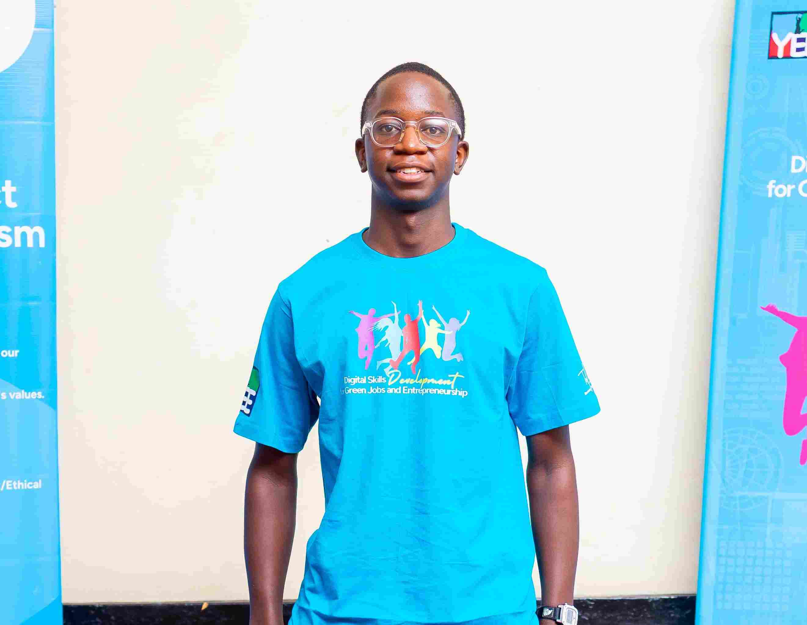

Richie Mpofu
About Me
My name is Richie Mpofu. I was born in Botswana but currently I live in Zimbabwe. I am a student at Brigham Young University - Idaho majoring in Software Development. I love poetry and playing basketball during my spare time. I am the last born in family. I am a foodie and very open to learning new things

Bulawayo, Zimbabwe
Bulawayo is the second capital city of Zimbabwe.It is also known as the city of kings because of it's prestigious king Mzilikazi. It is very colorful and diversity is abundant, from cultures, languages, and people. The most spoken language in Bulawayo is Ndebele. Since I have been in Bulawayo for most of my life I can speak Ndebele fluelty.